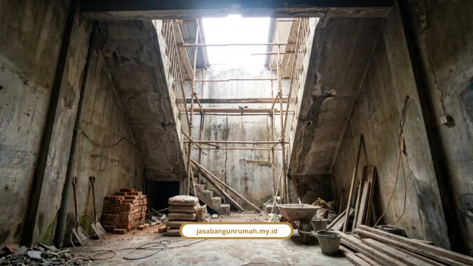

Daftar Isi
Desain ruko minimalis Melayani Makassar paling efisien membagi lantai 1 untuk usaha dan lantai 2 untuk hunian. Void dan ventilasi silang menjaga ruko tetap sejuk.
Kami bahas pembagian fungsi, gaya fasad, void, parkir, dan status PBG, lengkap dengan data kepuasan penghuni ruko.
Seberapa Puas Penghuni Ruko di Makassar?
Indeks kepuasan penghuni kompleks Ruko Metro Square Makassar hanya 64,5%, masuk kategori "agak puas". Riset akademik ini mencatat kualitas desain awal dan material sebagai variabel utama kepuasan fisik bangunan.
Andi Mujtahid, S.T., M.T., peneliti Magister Arsitektur Universitas Hasanuddin, merumuskannya begini: "Keberhasilan kinerja ruko berbasis kepuasan penghuni sangat ditentukan oleh kualitas desain awal dan pemilihan material. Perencana harus mampu menyeimbangkan kebutuhan komersial tanpa mengorbankan kenyamanan fungsi hunian."
Artinya, keputusan paling mahal justru diambil sebelum satu batu bata pun terpasang.
Bagaimana Membagi Fungsi Ruko 2 Lantai?
Bagi area publik di lantai 1 (toko, kantor, atau kafe) dan area privat di lantai 2 (ruang kerja pribadi atau hunian). Konsep mixed-use atau SOHO ini membuat satu bangunan bekerja ganda di lahan terbatas.
Wahyudi (2005), pakar arsitektur perkotaan, menyebut pembagian vertikal ini mempermudah pengawasan bisnis sekaligus aktivitas keluarga.
Jenis usaha yang cocok dengan pola ini:
- Kafe atau coffee shop
- Barbershop
- Toko ritel atau sembako
- Distro dan studio kreatif
- Kantor cabang atau jasa
- Klinik atau apotek
Untuk lokasi, Haris Aca, Official Marketing Partner Summarecon Mutiara Makassar, menyatakan bahwa ruko 2 lantai di jalur jalan utama atau boulevard memberi visibilitas tinggi dan fleksibilitas usaha untuk investasi jangka panjang.
Kekurangannya jelas. Lahan terbatas berarti setiap meter diperebutkan, dan yang biasanya dikorbankan lebih dulu adalah void dan parkir.
Gaya Fasad Apa yang Cocok untuk Ruko?
Ada dua gaya yang paling relevan: industrial dan tropis minimalis. Pilihannya bergantung pada jenis usaha dan iklim.
- Industrial dan modern industrial: paduan baja, kayu, bata ekspos, dan warna netral gelap. Cocok untuk kafe, distro, barbershop, dan studio kreatif
- Tropis minimalis: bukaan lebar dan peneduh untuk menyesuaikan iklim Makassar
Yongky Yulius, penulis dan pengamat properti, menegaskan bahwa fasad ruko 2 lantai membentuk citra usaha di mata pelanggan. Pemilihan konsep yang tepat terbukti meningkatkan daya tarik dan nilai jual bangunan.
Material fasad yang tahan cuaca:
- Lisplang atau GSM motif serat kayu berbahan GRC (Glassfiber Reinforced Concrete): ringan, kokoh, tahan panas dan cuaca, tidak mudah terbakar
- Pintu depan UPVC atau aluminium: anti-rayap dan tahan cuaca

Kenapa Void Ruko Jangan Dihilangkan?
Void atau sumur cahaya (chim-chay) menjaga sirkulasi udara dan cahaya alami di bagian tengah ruko. Tanpa void, hawa panas terperangkap.
Amri (2013), peneliti tata ruang dan bangunan Makassar, menyatakan bahwa penyederhanaan tata ruang dengan menghilangkan sumur cahaya menciptakan isolasi udara. Suhu ruangan naik dan ketergantungan pada energi buatan meningkat.
Banyak ruko menutup void demi mengejar efisiensi lantai. Hasilnya ruko pengap, AC menyala terus, dan lampu tetap hidup di siang hari.
Solusinya bisa direncanakan sejak gambar:
- Ventilasi silang (cross ventilation)
- Bukaan cahaya alami yang terencana
- Furnitur multifungsi dan rak terbuka gaya Skandinavia agar ruang terasa lebih luas
Tentu ada harganya: void memakan luas lantai. Trade-off ini yang harus dihitung, bukan diabaikan.
Bagaimana Menyiasati Parkir yang Sempit?
Gunakan lift parkir vertikal atau sistem hidrolik tumpuk otomatis. Sistem ini melipatgandakan kapasitas parkir di area kecil tanpa memakan badan jalan.
Perda Kota Makassar No. 9 Tahun 2011 juga mewajibkan pembangunan ruko dan kawasan hunian menyediakan Prasarana, Sarana, dan Utilitas (PSU):
- Jaringan drainase
- Pengelolaan sampah
- Pasokan air dan listrik
- Ruang terbuka hijau (RTH)
- Sarana parkir yang memadai
Bahasan sipilnya, mulai dari pola parkir sampai sanksi bahu jalan, ada di analisis struktur parkir depan ruko.
Apakah IMB Lama Masih Berlaku?
IMB lama tetap sah, kecuali pemilik melakukan renovasi besar, menambah lantai, atau mengubah fungsi bangunan dari rumah tinggal menjadi tempat usaha komersial. Di Kota Makassar, IMB sudah digantikan PBG (Persetujuan Bangunan Gedung).
Tahapan pengurusan PBG:
- Kumpulkan dokumen administrasi dan dokumen teknis (gambar arsitektur, struktur, MEP)
- Daftar dan unggah berkas melalui portal SIMBG milik Kementerian PUPR
- Verifikasi oleh Dinas PUPR atau DPMPTSP Makassar dan penilaian teknis oleh Tim Profesi Ahli (TPA)
- Terbitnya Surat Ketetapan Retribusi Daerah (SKRD) dan sertifikat PBG elektronik
Dokumen teknis PBG dan pembangunan fisiknya bisa dikerjakan satu tim lewat kontraktor bangunan dengan skema design and build.
Ruko 2 lantai hemat lahan bekerja baik ketika fungsi dibagi vertikal, fasad dipilih sesuai usaha, void dan ventilasi silang dipertahankan, dan parkir dihitung sejak awal. Semua itu harus lengkap dengan PBG.
Kami Melayani Makassar untuk perancangan dan pembangunan ruko dari konsultasi gratis sampai serah terima. Pesan jasa kami lewat WhatsApp:
- Jasa kontraktor bangunan untuk membangun ruko
- Jasa arsitek untuk denah, fasad, dan gambar kerja
- Jasa desain interior untuk tata ruang usaha
- Jasa renovasi bangunan gedung untuk ruko lama